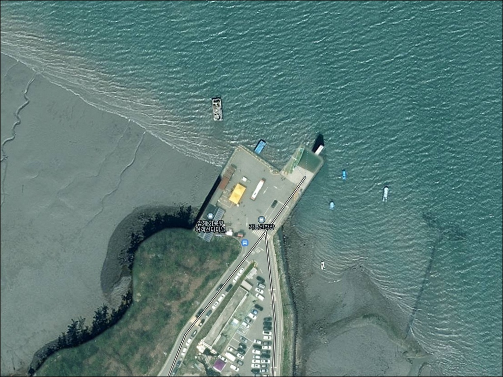
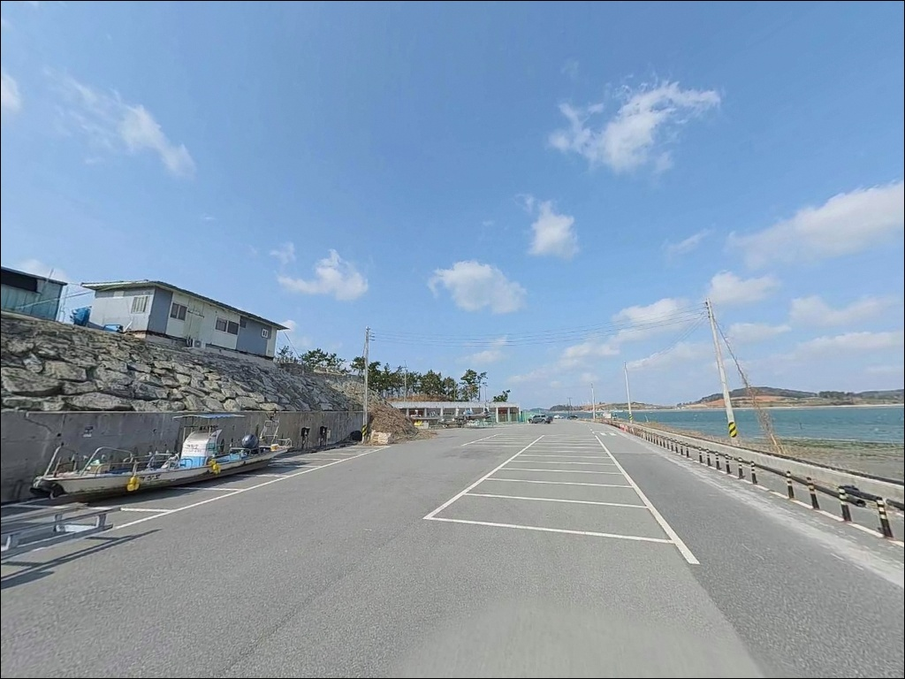
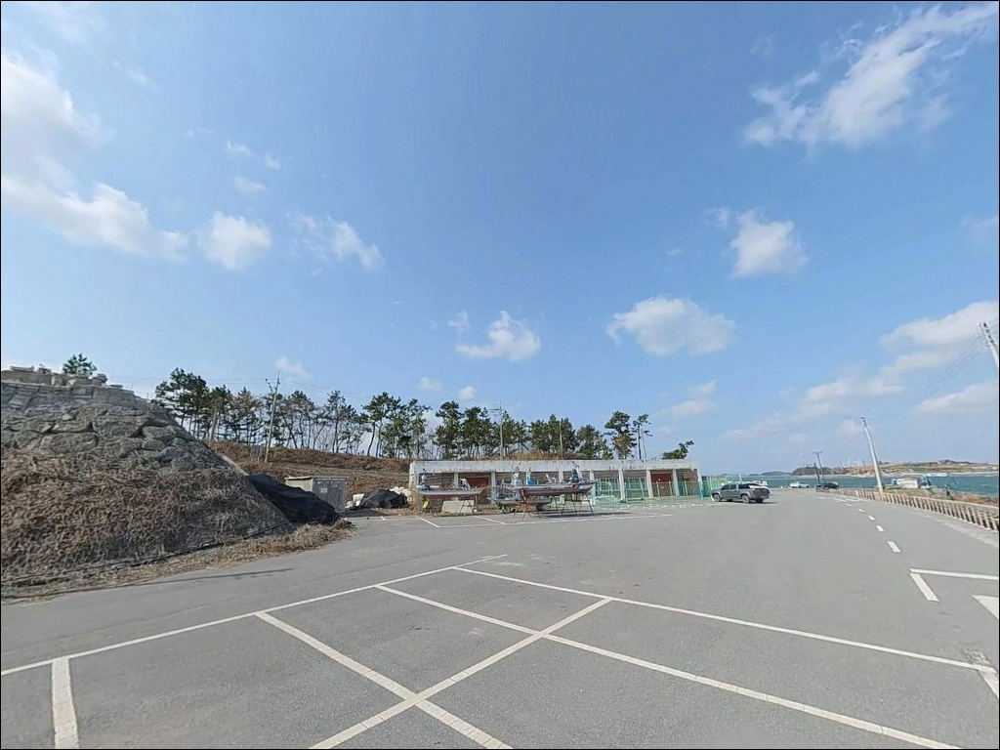
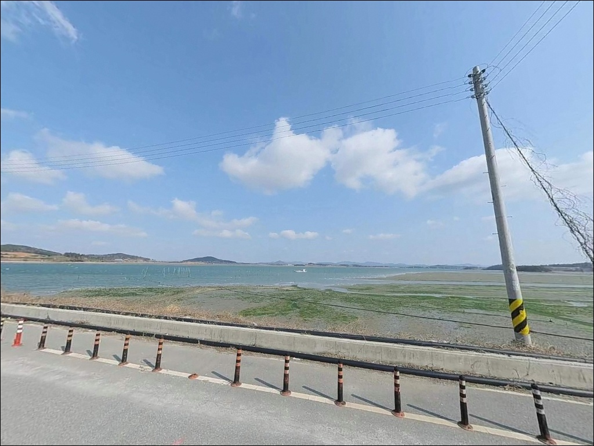
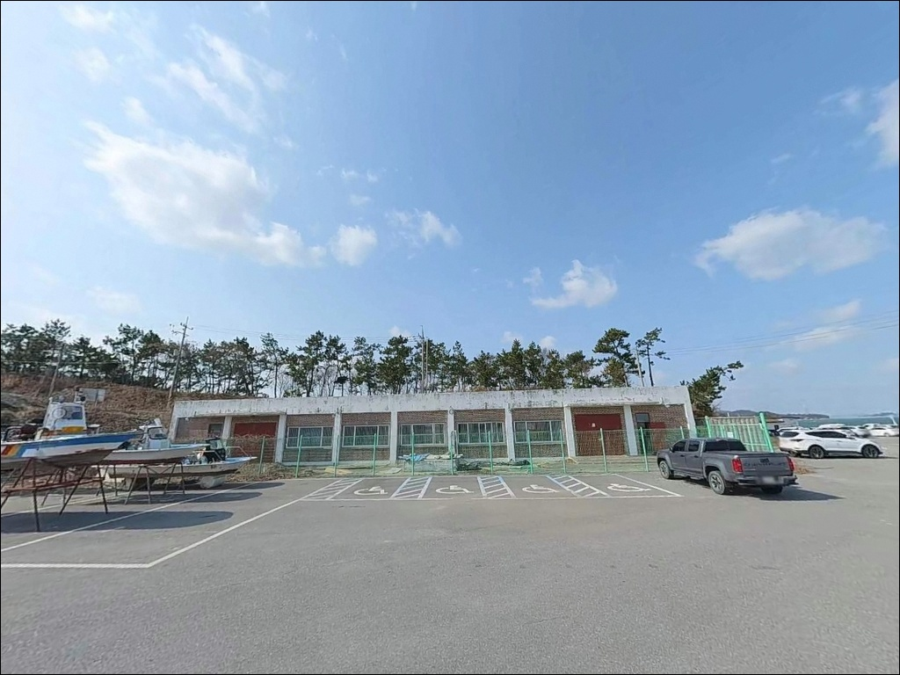
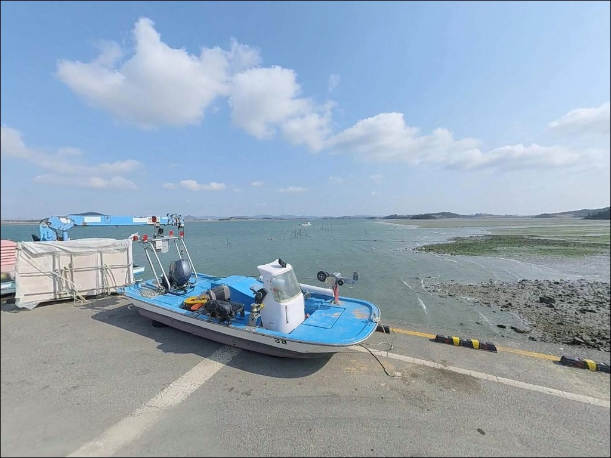
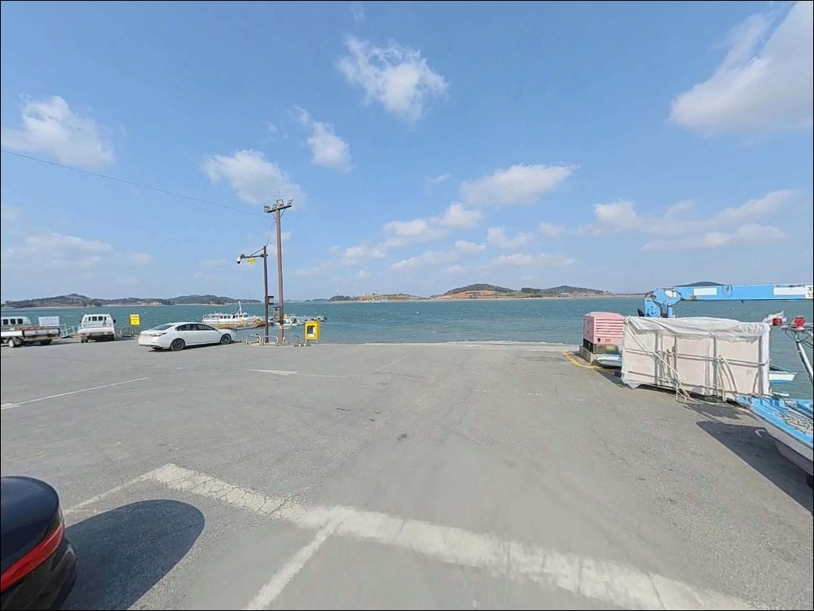
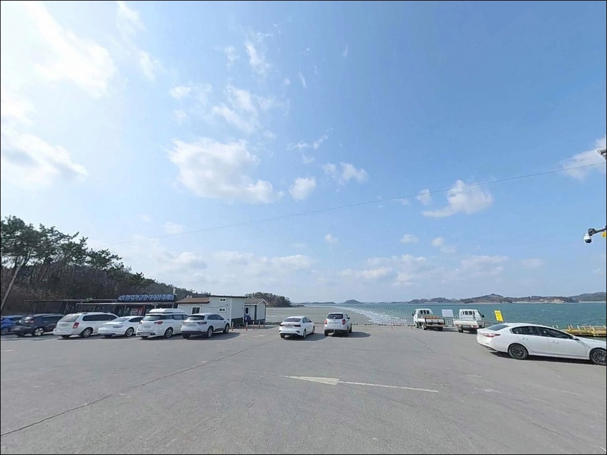
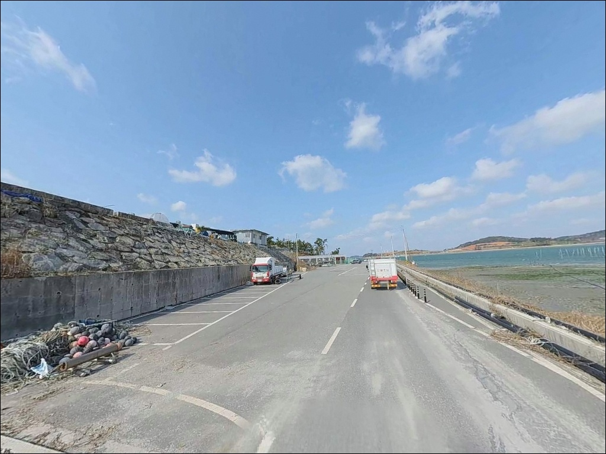

압해 가룡항, 가룡선착장, 전남 신안군 고요한 수면을 바라보며 차박, 낚시를 즐기기 좋은 해안
이 페이지에는 광고(제휴 링크 포함)가 있으며, 광고 링크를 통해 구매하면 운영자가 판매 수익 또는 수수료를 받을 수 있습니다. 포인트 사진: 카카오맵 스카이뷰·로드뷰. 이 페이지의 지도·사진 이미지는 카카오맵의 실제 서비스 이미지와 다를 수 있습니다.


포인트 안내
압해 가룡항
전남 신안군 압해읍 가룡리 134-24
물때 판단 없이 서해 내만 선착장에 진입하면
간조 때 수심이 낮아져
어떤 채비를 써도 낚시 여건을 살리기 어렵습니다.
가룡항은 압해도 북단에서 무안 수로를 마주한 내만형 포인트로,
조류의 방향과 물때가 낚시 성패를 가르는
구조입니다.
이 글은 가룡항의 진입 환경, 지형 구조,
낚시 방식 적합성, 차박 체류 조건에 집중합니다.
조황 단정이나 특정 어종 보장은
이 글의 범위에 포함되지 않습니다.

1. 진입 동선과 포인트 접근성
가룡항은 국도 77호선 압해읍사무소 방향에서
이정표를 따라 지선 도로로 진입하는 구조입니다.
항구가 막다른 끝에 자리하는 형태라
진입 이후 선택지가 없으므로,
출발 전 위성지도로 진입로를 먼저 확인하는
것이 기본입니다.
지선 도로 구간은 좁은 마을길이 포함된 편으로,
대형 SUV나 캠핑 장비를 실은 차량은
서행과 양보 동선을 미리 파악해 두는 편이 좋습니다.
회차는 여객터미널 광장 부근에서 가능한 구조이나
대형 차량은 여유 공간이 넉넉하지 않습니다.
주차는 여객터미널 앞 광장 부근이
가장 현실적인 후보입니다.
차도선을 이용하는 여객 차량과 공간을 공유하는 구조라
운항 시간대 전후로 통행량이 집중되는 편입니다.
어선 작업 동선과 겹치지 않는 자리를
먼저 확인하는 것이 출발점입니다.

2. 차박 환경과 야간 체류 여건
가룡항의 차박 여건은 여객터미널 광장 부근
주차 공간을 기반으로 한 체류가 현실적인 방식입니다.
차도선이 하루 4회 운항하므로
운항 시간대 전후에는 차량 이동이 집중됩니다.
운항 스케줄과 겹치지 않는 자리와 타이밍을
미리 파악해 두는 것이 차박 체류의 전제 조건입니다.
가룡리는 마을 끝 선착장 구조로
민가가 인접해 있어 완전한 고립 환경은 아닙니다.
야간 가로등은 터미널 시설 수준으로 제한적인 편이라
개인 조명 장비는 반드시 갖춰야 합니다.
압해도 북단 특성상 북서풍 영향을 받는 날은
바람 강도가 올라갈 수 있어,
기상 예보는 출발 당일 아침에 한 번 더 확인하는
것이 좋습니다.


3. 주변 편의시설 및 인프라 현황
가룡항에는 여객터미널 시설이 운영 중이며
매표소와 화장실을 이용할 수 있습니다.
다만 반경 3km 이내에서
편의점이나 마트를 기대하기는 어렵습니다.
식수, 간식, 얼음, 낚시 소품은
출발 전에 완전히 준비하는 것이
현실적인 접근 방식입니다.
압해읍 방향으로 국도 77호선을 따라
이동하면 읍내 생활 인프라를 이용할 수 있습니다.
낚시 전날 또는 출발 직전 압해읍에서
부족한 준비물을 챙기는 동선이 효율적이며,
응급 상황에 대비해
비상약품과 연료도 출발 전에 확인하는 것이
기본입니다.

4. 출조 전 반드시 확인해야 할 준비사항
가룡항 방문에서 가장 먼저 확인해야 할 것은
물때입니다.
서해 내만은 간만의 차가 커서
간조 전후에는 수심이 급격히 낮아지는 편입니다.
바다타임에서 압해읍 기준 물때를 확인하고
만조 전후 2시간을 집중 공략 타이밍으로
잡는 것이 기본 전략입니다.
서해 해역 특성상 안개가 잦은 편입니다.
기상청 예보와 함께 현지 바람 방향·세기를
당일 아침 다시 확인하는 습관이
헛걸음을 줄이는 조건입니다.
차도선 운항 시간은 선착장 내 통행량 변화에
직접 영향을 미치므로
운항 스케줄도 미리 파악해 두는 것이 좋습니다.
선착장과 어항은 어업 활동이 우선되는 공간입니다.
어선 이동 동선과 어구에 접촉하지 않도록
자리를 잡는 것이 기본 매너이며,
야간에는 구명조끼와 헤드랜턴을
반드시 갖추어야 합니다.

5. 지형 기반 낚시 여건 분석
가룡항이 자리한 압해도 북단은
개펄과 물골이 발달한 지형으로 알려진 해역입니다.
내만 수로 구조상 조류 흐름이 방향성을 가지며,
만조 전후로 수심이 확보되는 타이밍에
낚시 여건이 살아납니다.
반대로 간조 전후에는 수심이 낮아지므로
물때 확인이 이 포인트 진입의 핵심 판단 기준입니다.
선착장 발판 기준으로 수로 방향을 향해
채비를 보내는 방식이 이 지형에 어울립니다.
바닥 구성은 펄과 모래가 혼재하는 편으로
밑걸림보다는 채비 무게와 조류 속도의
균형을 맞추는 것이 우선 과제입니다.
조류가 움직이는 구간에서는
흘림 채비를 활용하는 방식이 유효합니다.
서해 내만형 선착장은 간조 전후 수심이 급격히 낮아지므로,
물때 확인이 진입 전 첫 번째 판단 기준입니다.
최신 조황은 출조 전
'가룡항 낚시', '압해도 방파제 낚시',
'신안 압해 조황' 등의 키워드로
반드시 검색해 보시기 바랍니다.


6. 수로 조류에 어울리는 낚시 스타일
이 포인트에서 가장 무난하게 시작할 수 있는 방식은
원투낚시입니다.
선착장 발판에서 수로 방향으로 채비를 던지고
조류 흐름을 타게 두는 방식이
서해 내만형 포인트 구조와 잘 맞습니다.
만조 전후 조류가 움직이는 타이밍에
집중하면 바닥 어종 반응을 기대할 수 있습니다.
루어낚시는 농어를 겨냥한 공략이
압해도 일대 수로 지형에 어울리는 방식입니다.
수로를 오가는 회유 어종을 노리는 구조라
물이 움직이는 타이밍에 미노우 캐스팅을
시도해 볼 만합니다.
만조 후 물이 빠지기 시작하는 전환 타이밍이
루어 반응이 살아나는 구간입니다.
릴찌낚시도 이 지형에 맞는 방식입니다.
조류 흐름을 활용해 흘림 채비를 내보내는 방식이
수로형 포인트에서 유효합니다.
선착장 주변에서 숭어 훌치기를
가볍게 병행하는 방식도
소규모 선착장 환경에서 시도해 볼 수 있습니다.

7. 대안 포인트와 플랜 B 동선
가룡항 여건이 맞지 않을 때
가장 먼저 이동할 수 있는 대안은
압해도 서쪽 끝의 송공항입니다.
주차 공간이 넓고 외부 낚시인 방문이 상대적으로 많은 곳으로,
바다타임에 낚시 포인트로 등록되어 있어
조황 정보 검색도 가룡항보다 수월한 편입니다.
송공항 인근에는 횟집이 영업 중인 것으로
기록된 곳이 있어
낚시 후 식사 동선까지 함께 묶을 수 있습니다.
처음 압해도를 방문하는 낚시인이라면
송공항을 기점으로 잡고 가룡항을 병행 탐색하는 동선이
효율적입니다.
가룡항 주변 압해도 해안선을 따라
크고 작은 선착장이 분포하고 있습니다.
당일 조류 여건이나 바람 방향에 따라
해안선을 따라 이동하며 대안 포인트를 탐색하는 방식도
압해도를 이용하는 현실적인 방법입니다.

수로 조류를 읽으면
가룡항이 달라 보입니다
원투낚시나 루어낚시를 즐기는 낚시인이라면
가룡항의 수로형 지형 구조는
시도해 볼 만한 조건을 갖추고 있습니다.
만조 전후 조류가 움직이는 타이밍을 잡고
수로 방향으로 채비를 보내는 방식이
이 포인트를 제대로 공략하는 방법입니다.
반면 물때 확인 없이 간조 시간대에 도착하거나,
차도선 운항 시간대를 고려하지 않고 자리를 잡으면
낚시 여건을 갖추기 전에
시간을 허비하는 상황이 벌어질 수 있습니다.
물때 확인, 운항 스케줄 파악, 자급 준비,
이 세 가지를 갖추고 간다면
조용한 서해 내만 선착장에서의 하루를
제대로 활용할 수 있는 곳입니다.
차도선 운항 선착장에서는
출발 시간대 차량 통행이 집중되므로,
자리를 잡기 전 운항 스케줄 파악이 선행되어야 합니다.
낚시를 마치고 여객터미널 시설을 활용하며
하룻밤 머무는 차박을 병행한다면,
조용한 압해도 북단의 서해 분위기를
온전히 느낄 수 있는 출조가 될 수 있습니다.